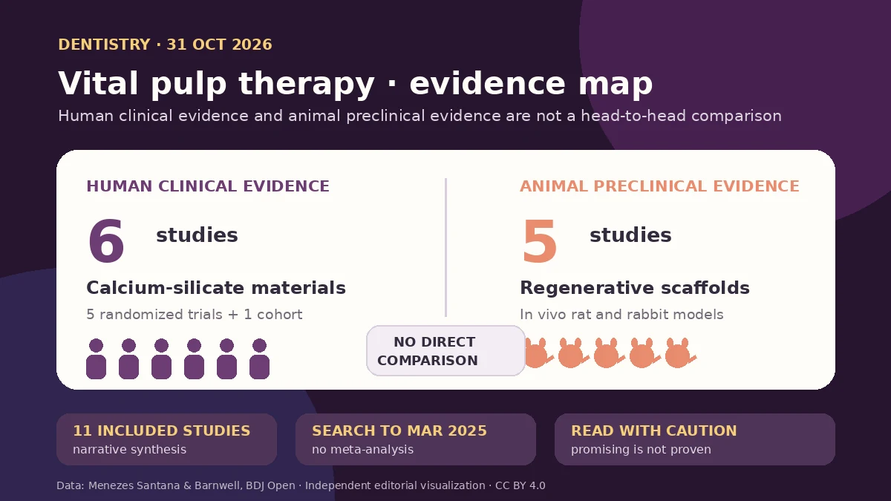

Yeni derleme, gelişimin iki farklı aşamasını yan yana getiriyor: kalsiyum silikatların insan verisi var; rejeneratif iskeleler ise şimdilik çoğunlukla hayvanlarda biyolojik yapılabilirliği gösteriyor. Bu karşılaştırma bir grubun diğerinden üstün olduğunu kanıtlamaz. İskelelerin gerçek hasta yararını değerlendirmek için doğrudan insan çalışmaları, standart sonuçlar ve uzun izlem gerekir.

Bir dakikada ana fikir
Marisa Menezes Santana ve Simon John Barnwell, 31 Ekim 2026'da BDJ Open'da bir sistematik derleme yayımladı. İki canlı pulpa tedavisi yaklaşımı hakkındaki kanıtları değerlendirdiler: pulpa canlılığını korumak ve onarım dentini oluşumunu desteklemek için kullanılan MTA ve Biodentine gibi kalsiyum silikat materyaller ile daha iddialı biçimde dentin–pulpa kompleksini düzenli bir doku olarak yenilemeyi hedefleyen mühendislik ürünü iskeleler. [1]
İlk 1.240 kayıttan tekrarlar çıkarılıp tarama yapıldıktan sonra yalnızca 11 çalışma derlemeye girdi. Altı insan çalışması kalsiyum silikat materyalleri, beş hayvan çalışması rejeneratif iskeleleri değerlendirmişti. Bu iki yaklaşımı aynı insan çalışmasında, hatta ortak bir deneysel çerçevede doğrudan karşılaştıran çalışma yoktu. Bu nedenle ana mesaj iskelelerin başarısız olduğu ya da üstün olduğu değil; klinik yanıt vermek için henüz erken olduğudur. [1]
Canlı pulpa tedavisi: Onarım ile rejenerasyon aynı değil
Canlı pulpa tedavisi; doğrudan pulpa örtülemesinden parsiyel veya tam pulpotomiye uzanan ve diş içindeki dokunun canlılığını korumayı amaçlayan işlemleri kapsar. Hidrolik kalsiyum silikatlar biyouyumlu bir ortam sağlar ve onarım dentini bariyerinin oluşmasını destekleyebilir. İskeleler ise hücre tutunmasını, damarlanmayı, hücresel farklılaşmayı ve doku organizasyonunu yönlendirmek amacıyla hidrojel, nanokompozit, enjekte edilebilir sistem veya üç boyutlu yapı biçiminde tasarlanır. [1] [3]
Bu hedefler aynı değildir. Onarım, doğal doku mimarisi bütünüyle yeniden kurulmadan pulpanın kapanmasına ve işlevini sürdürmesine yardımcı olabilir. Rejenerasyon daha zor bir iddia taşır: düzenli, damar içeren ve ölçülebilir işlevi olan doku oluşturmak. Bir hayvanda hücresel belirteçlerin veya pulpa benzeri dokunun görülmesi; aynı sistemin insan dişinde bakteri, bağışıklık farklılıkları ve dar pulpa boşluğu içinde daha iyi ve kalıcı sonuç vereceğini tek başına kanıtlamaz. [1]
Derleme nasıl yapıldı?
Araştırmacılar MEDLINE, Scopus ve Web of Science'ı başlangıçtan Mart 2025'e kadar taradı; yalnızca İngilizce yayımlanmış insan araştırmaları ile in vivo hayvan çalışmalarını kabul etti. 621 tekrar çıkarıldıktan sonra 619 başlık ve özet tarandı, 30 tam metin değerlendirildi ve 11 çalışma kaldı: beş randomize klinik çalışma, bir prospektif kohort ve beş hayvan araştırması. Materyaller, modeller, tedavi protokolleri, sonuç ölçütleri ve izlem süreleri çok farklı olduğu için meta-analiz yapılmadı; bulgular anlatısal olarak sentezlendi. [1]
İnsan çalışmaları JBI, hayvan çalışmaları SYRCLE araçlarıyla değerlendirildi. İnsan araştırmalarının yöntemsel niteliği genel olarak orta ile yüksek arasında tanımlansa da örneklem büyüklükleri, çoğunlukla 12–24 aylık izlem, bazı çalışmalarda körleme olmaması ve uygulayıcıya bağlı değişkenlik önemli sınırlardı. Hayvan çalışmalarında genel yanlılık riski orta düzeydeydi; randomizasyon, atama gizliliği ve sonuç değerlendiricisinin körlenmesi çoğu zaman yetersiz raporlanmıştı. [1]
Bulgular ne gösterdi?
Altı insan çalışmasında kalsiyum silikat materyaller pulpa canlılığının korunması ve onarım dentini oluşumu açısından olumlu sonuçlarla ilişkiliydi. Beş hayvan çalışmasındaki iskeleler ise daha fazla damarlanma, odontojenik farklılaşma belirteçlerinin artması ve düzenli pulpa benzeri ya da dentin benzeri yapıların oluşmasını bildirdi. Bu hayvan bulguları biyolojik yapılabilirliği destekliyor; fakat örneklemler genellikle küçüktü veya eksik raporlanmıştı ve izlem kısa süreliydi. [1]
En önemli yorum sınırı, iki kanıt grubunun aynı düzeyde olmamasıdır. İnsanlarda klinik kullanılan bir materyalin olumlu sonucu, sıçan veya tavşandaki bir iskele sistemiyle doğrudan karşılaştırılamaz. Yazarlar birleşik etki büyüklüğü ya da tedavi sıralaması da sunmadı. “Kalsiyum silikatlar güncel klinik ölçüttür” sonucu yeni kılavuzlarla uyumludur; ancak bu derlemenin kendisi kalsiyum silikatların iskelelere doğrudan üstünlüğünü sınamamıştır. [1] [2] [3]
Önemli sınırlılıklar
Derleme protokolü PROSPERO veya benzeri bir sistemde önceden kaydedilmemişti. İlk tarama, veri çıkarımı ve kalite değerlendirmesini bir araştırmacı yaptı; ikinci araştırmacı bunları doğruladı. Bu yöntem, iki kişinin birbirinden bağımsız incelemesinden daha zayıftır. Arama Mart 2025'te sona erdi; dolayısıyla Ekim 2026 tarihli makale sonraki yaklaşık 19 ayın tüm araştırmalarını kapsamıyor. Yalnız İngilizce yayınların alınması ve GRADE uygulanmaması da kapsamı ve kesinliği azaltıyor. [1]
Ayrıca hayvan modellerinin çoğu, gerçek klinikteki mikrobiyal yükü taklit etmeyen kontrollü koşullarda yürütüldü. Enfeksiyon, kanama kontrolü, pulpa tanısı, uygulayıcının becerisi ve son restorasyonun kalitesi insan sonucunu değiştirebilir. Bu nedenle histolojik kesitte düzenli görünen doku; henüz daha az ağrı, daha uzun diş sağkalımı veya hasta için daha iyi sonuç anlamına gelmez. [1]
Bugünkü uygulama için anlamı
Yeni klinik kılavuzlar, birçok pulpa örtüleme ve pulpotomi senaryosunda kalsiyum silikat simanları destekliyor; ancak önerinin gücü tanıya ve klinik soruya göre çok düşükten yükseğe değişiyor. Tedavi seçimi yine ağrı öyküsü, muayene, kanamanın kontrol edilebilirliği, izolasyon, dişin restore edilebilirliği ve hastayla ortak karara bağlıdır. Bu derleme kişiye özel tedavi önerisi değildir. [2] [3]
Rejeneratif iskeleler değerli bir araştırma hattıdır; fakat bir sonraki adım uygun karşılaştırma grubu, hasta odaklı sonuçlar, açık başarı tanımı, enfeksiyon kontrolü ve uzun izlem içeren doğrudan insan çalışmaları olmalıdır. O zamana kadar “rejeneratif umut” ile “kanıtlanmış tedavi” birbirinden ayrılmalıdır.
Birincil kaynaklar
Ana makalenin açık erişimli tam metni, yöntemleri, bulguları, yanlılık değerlendirmesi, tartışması, sınırlılıkları ve yayın bilgileri BDJ Open'da incelendi. Klinik bağlam için PubMed'deki daimi diş canlı pulpa tedavisi kılavuzu ile Avrupa Endodontoloji Derneği S3 kılavuzu gözden geçirildi. İnceleme sırasında ana başlık veya DOI için bir düzeltme, geri çekme ya da endişe bildirimi bulunmadı.
- Menezes Santana M, Barnwell SJ · Canlı pulpa tedavisinde iskele temelli ve kalsiyum silikat biyomateryaller: kanıtlar ve klinik çeviri sorunları üzerine sistematik derleme · BDJ Open · 31 Ekim 2026 · DOI: 10.1038/s41405-026-00480-7
- Coll JA ve çalışma arkadaşları · Daimi dişlerde canlı pulpa tedavisi kullanım kılavuzu · Pediatric Dentistry · 15 Eylül 2025
- Duncan HF, Kirkevang LL, Peters OA ve çalışma arkadaşları · Avrupa Endodontoloji Derneği pulpal ve apikal hastalık S3 klinik kılavuzu · International Endodontic Journal · 2023 · DOI: 10.1111/iej.13974
Bu yazı genel bilgilendirme amaçlıdır; kişiye özel tanı veya tedavinin yerini tutmaz.